jenkins
Execute os passos abaixo para configuração do Jenkins
Criando Par de Chaves
Antes de começar vamos criar um novo par de chaves para o exercício porque iremos usa-lo para acesso SSH, caso
tenha um previamente criado e queria usa-lo fique a vontade, mas certifique que você possui a chave .pem desse
certificado poderá pular essa fase e ir pra criação da máquina acesse o menu:
, informe um nome, clique: Criar par de chaves
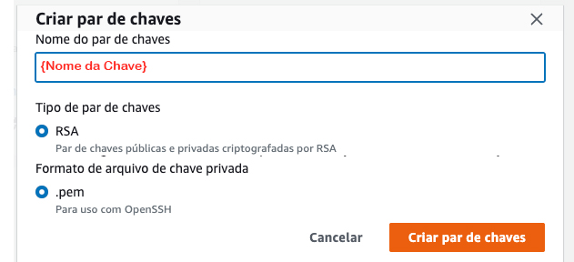
O arquivo {nome do par de chaves}.pem será disponibilizado
Criando a Instância
Para criar uma instância vá no painel EC2 na opção e escolha a opção:
Executar Instâncias
Os parâmetros usados serão:
Nome: jenkins
Máquina SO: Ubuntu Server 22.04 LTS amd64
Máquina Type: T2 Medium
Disco: 50GB

Instância
Logo em seguida aguarde a instância ficar disponível

Criar IP Elástico
Agora precisamos criar um IP Elástico para acesso "Externo", acesse o menu
conforme a imagem abaixo, clique no menu depois em Alocar endereço IP elástico.
Dica: Quando alocar coloque o nome do ip elastico com o mesmo nome da instância criada para facilitar localização.

Associar IP Elástico
Precisamos associar esse IP a instância previamente criada, para isso então clique sobre o ip que acabou de criar,
então será apresentado uma tela com as informações do ip, clique em Associar endereço IP elástico.
Na nova tela, selecione Instância, então abaixo no campo selecione a instância previamente
criada, Depois clique em Associar

Regras de Segurança
Para acessar a Instância criada, precisamos liberar as entradas de porta então acesse o menu:
.
Aproveite e renomeie o nome do grupo de segurança para o nome da instância criada previamente e depois
selecione a regra, no menu superior Ações selecione:
 Nas regras de entrada vamos liberar todas as portas, mas em produção se atente em liberar apenas as portas
necessárias, mude o campo para conforme abaixo e clique em: Salvar Regras.
Nas regras de entrada vamos liberar todas as portas, mas em produção se atente em liberar apenas as portas
necessárias, mude o campo para conforme abaixo e clique em: Salvar Regras.

Nas regras de entrada vamos liberar todas as portas, mas em produção se atente em liberar apenas as portas
necessárias, mude o campo para conforme abaixo e clique em: Salvar Regras.
Acessando a instância
Caso você queira acessar o da máquina pelo browser, selecione a instância criada previamente clique em Conectar,
na nova tela informe o usuário , depois clique em: Conectar.
 Caso queira poderá usar o ou um cliente SSH instalado local na sua estação.
Caso queira poderá usar o ou um cliente SSH instalado local na sua estação.
Caso queira poderá usar o ou um cliente SSH instalado local na sua estação.
Instalando o Jenkins
#Instalando JDK
apt update
apt install -y openjdk-11-jdk
java -version
#Add repositório Jenkins
curl -fsSL https://pkg.jenkins.io/debian-stable/jenkins.io.key | sudo tee /usr/share/keyrings/jenkins-keyring.asc > /dev/null
echo deb [signed-by=/usr/share/keyrings/jenkins-keyring.asc] https://pkg.jenkins.io/debian-stable binary/ | sudo tee /etc/apt/sources.list.d/jenkins.list > /dev/null
#Instalando Jenkins
apt update
apt install jenkins -y
#Habilitar serviço Jenkins
systemctl enable --now jenkins
systemctl status jenkins
#Liberar a porta do Jenkins
ufw allow 8080
#Instalar Docker
apt install apt-transport-https curl gnupg-agent ca-certificates software-properties-common -y
curl -fsSL https://download.docker.com/linux/ubuntu/gpg | sudo apt-key add -
add-apt-repository "deb [arch=amd64] https://download.docker.com/linux/ubuntu focal stable"
apt install docker-ce docker-ce-cli containerd.io -y
chmod 777 /var/run/docker.sock
docker ps
#Visualizar token de instalação do Jenkins
cat /var/lib/jenkins/secrets/initialAdminPassword
#copie o token para uso logo adiante
Acessando a Instância
Pelo IP Elastico da Instância acesse no seu browser o endereço:
 Ao acessar o Jenkis irá pedir o token previamente copiado, informe no campo Senha do Adminstrador
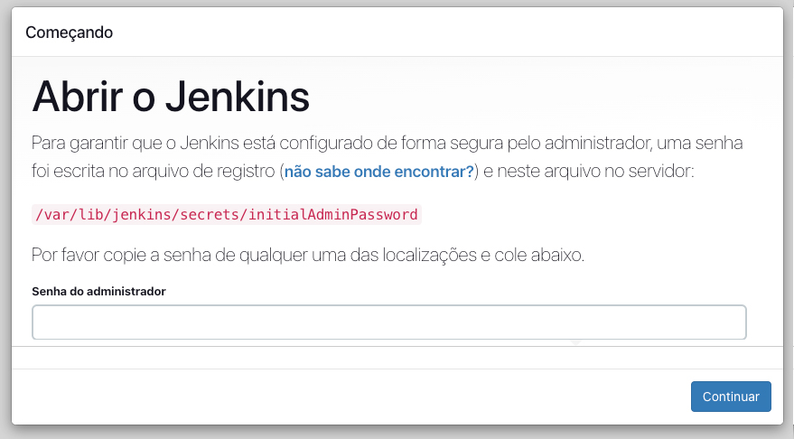
Ao acessar o Jenkis irá pedir o token previamente copiado, informe no campo Senha do Adminstrador
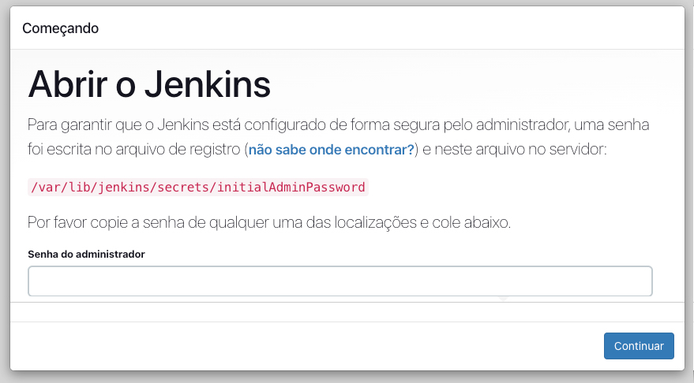
Ao acessar o Jenkis irá pedir o token previamente copiado, informe no campo Senha do Adminstrador
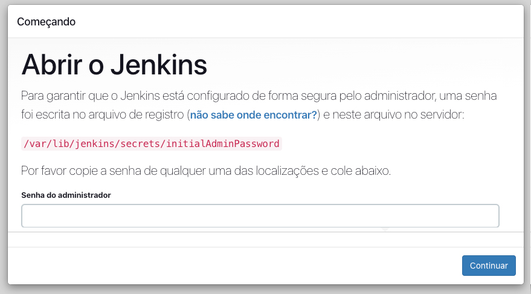
Escolhendo modo de Instalação
Escolha a opção "Select plugins to install
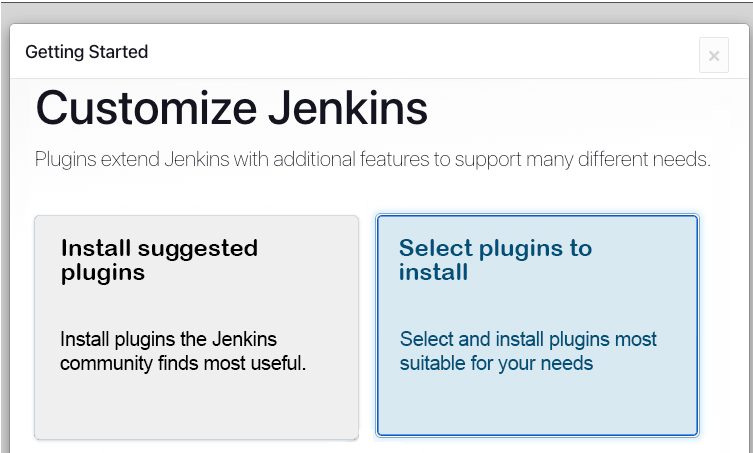
Instalando Plugins
Selecione na lista o plugin , Depois clique em Install
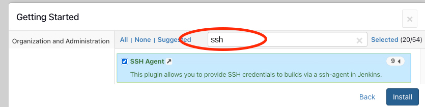
Aguarde o fim da instalação
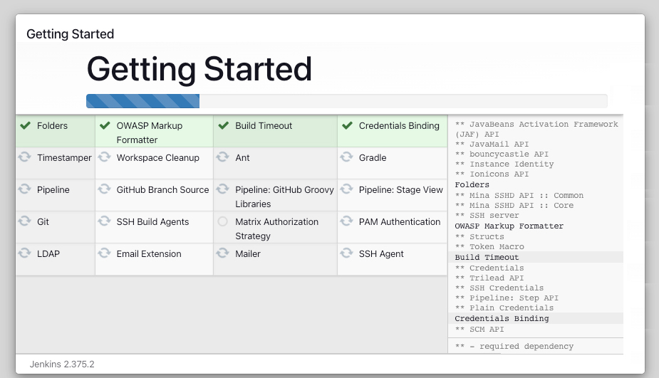
Criando Usuário Admin
Informe o Nome de usuário como: .
Crie uma senha .
Informe o Nome completo como: .
No campo email informe seu email
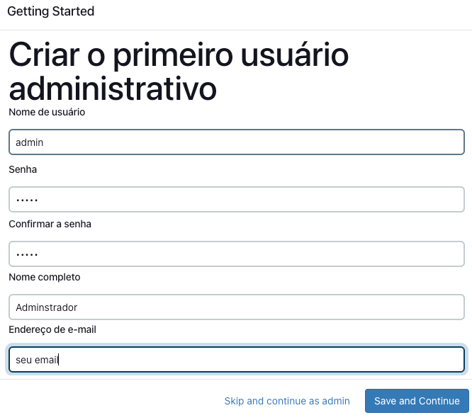
Url Jenkins
Como não temos um domínio registrado vamos por ip mesmo então informe o endereço do jenkins como: 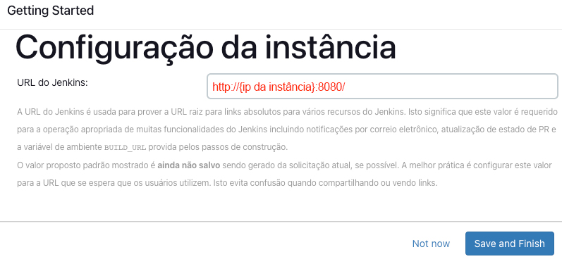 Finalizamos a instalação 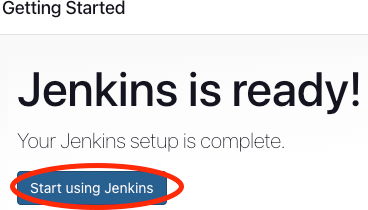
Configurando Ferramentas
No Menu do Jenkins acesse:
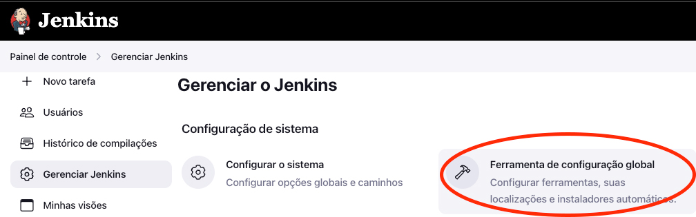
Configurando JDK
Procure o texto JDK e clique em JDK JDK Instalações e preencha conforme a figura abaixo
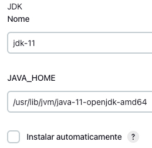
Configurando o Maven
Procure abaixo o Texto Maven e clique em Adicionar Maven selecione a opção Instalar automaticamente(tem que
ficar marcado) e preencha conforme a imagem abaixo:
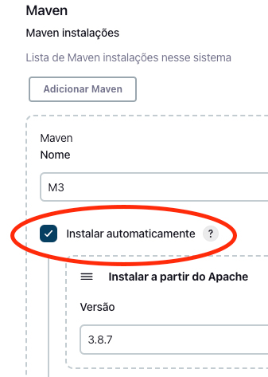
Por enquanto finalizamos as configurações do Jenkins.